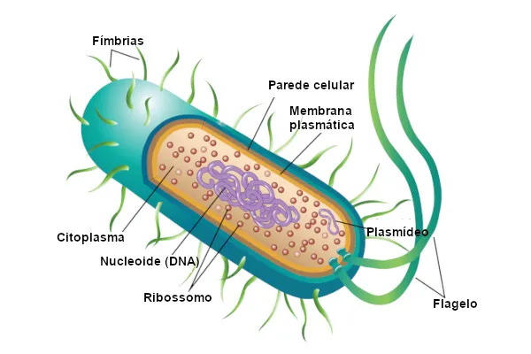

São células simples que não possuem núcleo definido. O DNA fica disperso no citoplasma.
São
típicas de bactérias e arqueias.
Camada externa que protege a célula contra desidratação e ataque do sistema imunológico.
Estrutura rígida que dá forma e proteção à célula.
Envolve a célula, controla a entrada e saída de substâncias da célula e separa a célula do ambiente externo.
Região interna que contém o citosol e partículas como ribossomos, onde ocorrem as reações químicas da célula.
Organelas responsáveis pela produção de proteínas.
Região onde fica o DNA da célula, sem membrana envolvendo.
Projeções da superfície de certas bactérias. Semelhantes a fios, ajudam a bactéria a aderir a outras bactérias, células e superfícies.
Fragmentos de DNA que não fazem parte do cromossomo principal.
Responsável pela locomoção e impulsão da célula.